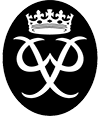

Service Award Scheme
The service award scheme at Hamilton Boys’ High School is split into three sections: Bronze, Silver and Gold. For each section of the award students are required to complete a set number of hours:
- For the Bronze award students must complete 40 hours of service
- For the Silver award students must complete 80 hours of service
- For the Gold award students must complete 100 hours of service
After the three stages of the award, there is a Platinum award given out once a year for someone in Year 13 who has demonstrated exemplary service throughout their time at Hamilton Boys’ High School.
Those interested in participating in the award scheme must purchase a service booklet from the school shop and write down the type of service given and the number of hours, then get this signed off by a supervisor or someone involved with the type of service given by the student.
Service Committee prefects are in the Study Centre every Wednesday morning during registration and students can bring their booklets in each week to get the hours logged, so that they can receive an award. Awards are generally given out in assemblies in Term 4.
In addition to the school service award scheme, students may also credit service hours they have completed towards the Duke of Edinburgh's Hillary (or Duke of Edinburgh) Award, a scheme that encourages personal development and character building through the completion of service, learning a new skill, playing a sport and completing a number of adventurous journeys. See here for more details.
Service Committee
The school’s Service Committee is one of the prefect committees, made up of a number of prefects and led by one of the Deputy Head Prefects. As a committee they are in charge of coordinating events such as the KidsCan Fun Run, the Great Dome Shave, and the two annual Blood Drives. As well as this they are tasked with running the school’s service award scheme, and finding ways to increase the number of students in the school who are involved in various service activities.